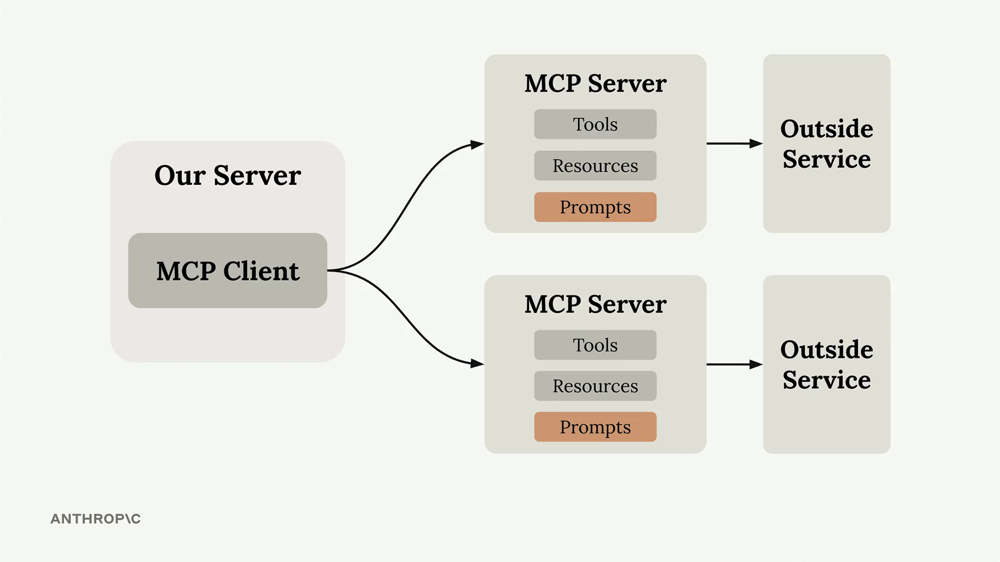
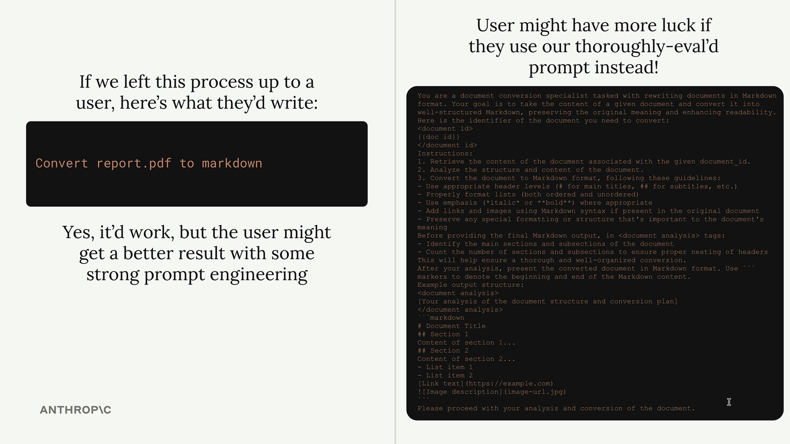
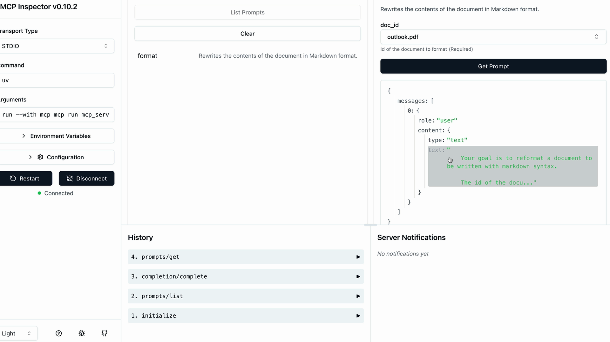

Промпты в MCP
Чему научитесь
Видео 7:44 и текст урока
К концу урока вы сможете:
- объяснить, зачем MCP-серверу готовые промпты, если пользователь может и сам попросить Claude о том же;
- описать промпт декоратором
@mcp.promptи вернуть из функции промпта список сообщений; - проверить в MCP Inspector, как аргумент подставляется в шаблон промпта.
Видео и текст урока.
Смотреть урок на Skilljar Defining prompts · 7:44Промпты в MCP-серверах позволяют задать готовые высококачественные инструкции, которыми клиенты могут пользоваться вместо того, чтобы писать собственные промпты с нуля. Считайте их тщательно продуманными шаблонами, которые дают результат лучше, чем то, что пользователи придумали бы сами.

Зачем нужны промпты
Ключевая мысль такая: пользователи и так могут напрямую попросить Claude выполнить большинство задач. Например, пользователь может написать «reformat the report.pdf in markdown» («переоформи report.pdf в Markdown») и получить вполне приличный результат. Но результат будет гораздо лучше, если вы предложите пользователю тщательно протестированный специализированный промпт, который учитывает пограничные случаи и следует лучшим практикам.
Как автор MCP-сервера вы можете потратить время на то, чтобы составить, протестировать и оценить промпты, которые стабильно работают в самых разных сценариях. Пользователи получают этот опыт в готовом виде, и им не нужно самим становиться экспертами в prompt engineering.

Создаём команду форматирования
Реализуем практический пример — команду форматирования, которая преобразует документы в Markdown. Пользователь вводит /format doc_id и получает профессионально оформленную Markdown-версию своего документа.
Процесс выглядит так:
- пользователь вводит
/, чтобы увидеть доступные команды; - выбирает
formatи указывает ID документа; - Claude по вашему готовому промпту читает документ и переоформляет его;
- результат — чистый Markdown с правильными заголовками, списками и форматированием.
Как описать промпт
Промпты описываются декоратором — примерно так же, как инструменты и ресурсы:
@mcp.prompt(
name="format",
description="Rewrites the contents of the document in Markdown format."
)
def format_document(
doc_id: str = Field(description="Id of the document to format")
) -> list[base.Message]:
prompt = f"""
Your goal is to reformat a document to be written with markdown syntax.
The id of the document you need to reformat is:
<document_id>
{doc_id}
</document_id>
Add in headers, bullet points, tables, etc as necessary. Feel free to add in structure.
Use the 'edit_document' tool to edit the document. After the document has been reformatted...
"""
return [
base.UserMessage(prompt)
]
Функция возвращает список сообщений, которые отправляются прямо Claude. В список можно включить несколько сообщений пользователя и ассистента, чтобы выстроить более сложный ход диалога.
Проверка промптов
Прежде чем выпускать промпты, проверьте их в MCP Inspector:

format в MCP Inspector: значение doc_id подставлено в текст единственного сообщения с ролью user.Инспектор показывает, какие именно сообщения будут отправлены Claude, в том числе как переменные подставляются в шаблон промпта. Так можно убедиться, что промпт выглядит правильно, ещё до того, как пользователи начнут на него полагаться.
Главные преимущества
- Стабильность — пользователи каждый раз получают надёжный результат;
- Экспертиза — в промпты можно заложить знания предметной области;
- Переиспользование — одни и те же промпты могут использовать разные клиентские приложения;
- Поддержка — достаточно обновить промпт в одном месте, чтобы улучшить работу всех клиентов.
Лучше всего промпты работают, когда они заточены под предметную область вашего MCP-сервера. У сервера для управления документами могут быть промпты для форматирования, краткого изложения или анализа документов. У сервера для анализа данных — промпты для подготовки отчётов или визуализаций.
Цель — дать промпты, настолько хорошо составленные и проверенные, что пользователи предпочтут их собственным инструкциям, написанным с нуля.
Дальше
Следующий урок — «Промпты в клиенте»: научим MCP-клиент получать список промптов и сами промпты с подставленными аргументами, а затем запустим команду /format в CLI.
Оригинал урока: Defining prompts.